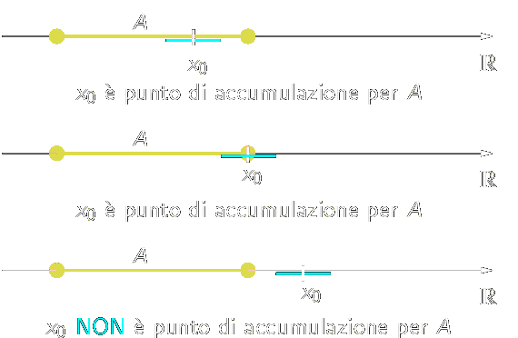

Topology
Definition 1.1.1. A set A ⊆ ℝ is bounded above if there exists a number M ∈ ℝ such that a ≤ M for all a ∈ A. The number M is called an upper bound for A. Similarly, the set A is bounded below if there exists a lower bound l ∈ ℝ satisfying l ≤ a for every a ∈ A. □
Definition 1.1.2. A real number s is the least upper bound for a set A ⊆ ℝ if it meets the following two criteria:
s is an upper bound for A;
if b is any upper bound for A, then s ≤ b.
The least upper bound is also frequently called the supremum of the set A and is denotes by s = sup A. The greatest lower bound or infimum for A is defined in a similar way and is denoted by inf A. □
Definition 1.1.4. A real number M is a maximum of the set A if M is an element of A and M ≥ a for all a ∈ A is denoted by M = max A. Similarly, a number m is a minimum of A if m ∈ A and m ≤ a for every a ∈ A, and is denoted by m = min A. □
Example 1.1.3. Let
A = {1/n : n ∈ ℕ} = {1, 1/2, 1/3, ..}
The set A is bounded above and below. Successful candidates for an upper bound include 3, 2, and 5/2. For the least upper bound, we claim sup A = 1, which is also the maximum of A. To argue this rigorously using Definition 1.1.2, we need to verify that properties (i) and (ii) hold. For (i), we just observe that 1 ≥ 1/n for all choices of n ∈ ℕ. To verify (ii), we begin by assuming we are in possession of some other upper bound b. Because 1 ∈ A and b is an upper bound for A, we must have 1 ≤ b. This is precisely what property (ii) asks us to show. ■
Intervals
We call a subset A of real line an interval if, whenever we have distinct point a,b ∈ A, then all points which are greater than a and less than b also lie in A.
Definition 1.1.4. Let a and b two real numbers such that a ≤ b. We call closed interval the set
[a,b] = {x ∈ ℝ | a ≤ x ≤ b}
If a < b, we call open interval of extremes a and b, the set
(a,b) = {x ∈ ℝ | a < x < b}
An equivalent notation for this set is ]a,b[. □
It's possible to exclude from the interval one extreme, obtaining the semi-opened interval to the right of extremes a and b
[a,b) = {x ∈ ℝ | a ≤ x < b}
or semi-opened interval to the left
(a,b] = {x ∈ ℝ | a < x ≤ b}
The intervals presented above are all example of bounded intervals; There are also unbounded (or infinite) intervals;
Definition 1.1.5. We define the infinite intervals
(a, ∞) = {x ∈ ℝ : x > a},
[a, ∞) = {x ∈ ℝ : x ≥ a},
(−∞, b) = {x ∈ ℝ : x < b},
(−∞, b] = {x ∈ ℝ : x ≤ b},
(−∞, ∞) = ℝ.
In particular if a = b, we have a degenerate interval; A singleton {a} is a degenerale interval. □
The symbol −∞ and +∞ do not indicate real numbers; they allow to extended the ordering of real numbers with the convention that −∞ < x and x < +∞ for each x ∈ ℝ. In some cases we set
(−∞ , +∞) = ℝ
Accumulation Point
Definition (Accumulation Point, Isolated Point). Let A ⊆ ℝ: We call x0 ∈ ℝ an accumulation point (or limit point) of A if for every ε > 0, Bε(x0) contains an element a ∈ A \{x0}. A number x0 ∈ A is called an isolated point of A if it is not an accumulation point of A; i.e., if for some ε = ε(x0), we have Bε(x0) ∩ A = {x0}. □
An accumulation point is also called a cluster point, a condensation point or a limit point. An accumulation point of a set may or may not be a member of the set. Ad es., se A = (a,b) \ {x0} con x0 ∈ [a,b], allora tutti i punti dell'intervallo chiuso [a,b] sono di accumulazione per A; in particolare x0, pur non appartenendo ad A, è di accumulazione per A.
Remark. If x0 is an accumultaion point of A ⊂ ℝ, then for each ε > 0 the intersection Bε(x0) ∩ A is infinite. That is the definition implies that every neighborhood of x0 contains an inifnite number of points of A. For if on the contrary it only contained a finite number of points of A, say a1, an, we could find a smaller neighborhood of x0 that does not contain a1, an as indicated as follows.
________(____a2____a3__(x0)___a1_____)___
Intuitively this means that by zooming in an infinite number of times at x0 we continue to see points of A (different from x0) at all magnifications no matter how deep you zoom in.
If we reformulate the definition to include this; we can drop the clause excluding x0: x0 is an accumulation point of A if every neighborhood of x0 contains infinitely many points of A.
To clarify the definition of accumulation point, examine the following cases:
The set {1,1/2,1/4,...} has 0 as accumulation point; in fact 0 is the only accumulation point of this set. The set of integers ha no accumulation point, for no number has infinite number of integers nearby.